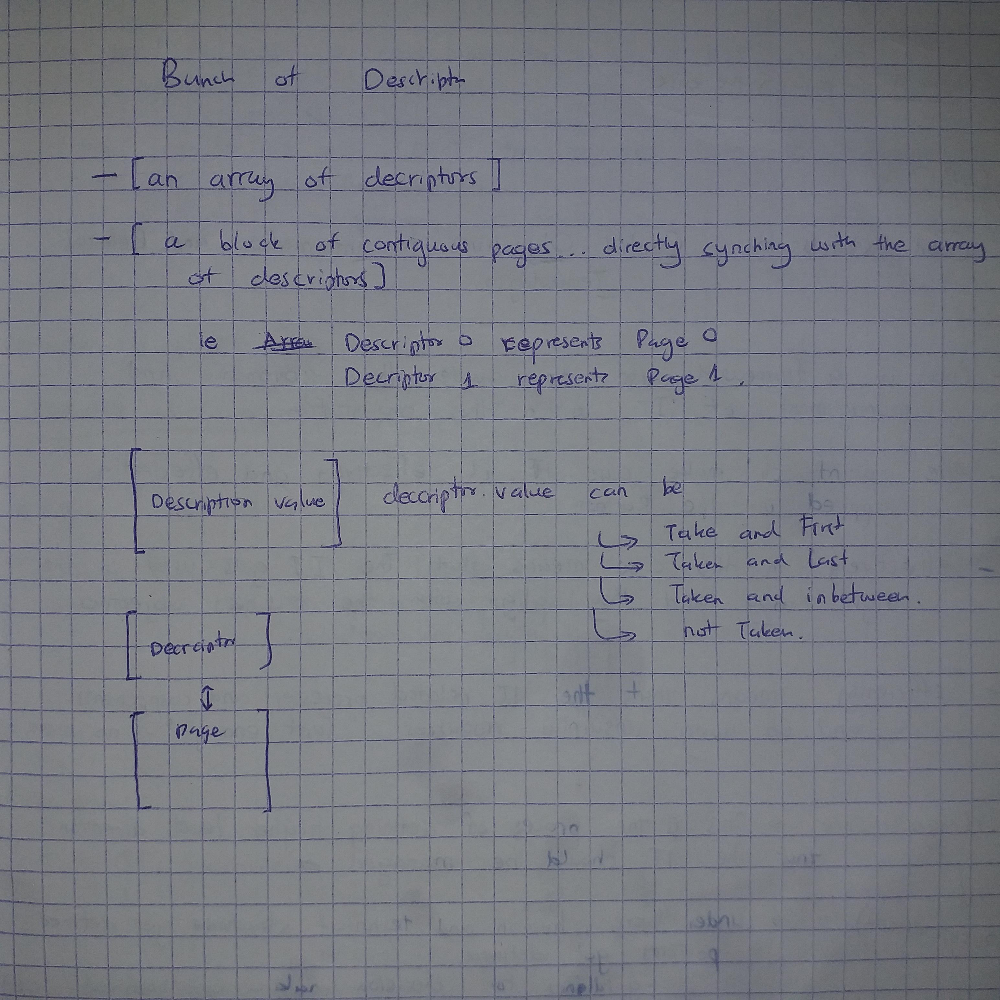

Setting Things Up
Under this chapter, we intend to answer the following 3 questions :
- What are we setting up?
- Why are we setting up those things?
- How are we seting up those things?
What are we setting up?
We are setting up a development toolchain, RISCV virtual environment and a no-std Rust file.
The development Toolchain
A toolchain is a group of software tools that typically get used together...a chain of tools... In OS Development, the name toolchain usually refers to the combination of the compiler, linker, debugger and a bunch of programs that help in inspecting files. This toolchain gets used to convert source code into a format that can run on an execution environment.
An execution environment is a place where a software program can run. It provides the necessary resources, like the operating system and libraries, that the program needs to function. Examples of execution enviroments include: Bare metal, Browsers, Virtual Machines, Operating systems and Containers.
The toolchain in our case will consist of the following tools :
- The Rust Nightly Compiler with a riscv64gc-unknown-none-elf backend
- linker : Rust-lld
- Binutils
- Make
To our luck, we do not have to install all these elements seperately. There exists compact toolchains :
- LLVM Riscv toolchain
- The GNU Riscv Toolchain
Why we need the toolchain
We will have two kinds of source code files in our project : Rust source files and RISCV-Assembly files. Both of these types of files need to be turned into object files. Afterwards, those object files need to get linked together into a single executable file.
We can go about this process of creating a single executable file in two ways: 1. Method 1 We can compile the Rust files seperately from the Assembly files. Afterwords we can combine the resultant object files using a linker to form a single executable. 2. Method 2 We can embed the assembly code into the Rust source code. That way, we only need one compilation, we will only need to compile the asm_embedded Rust files. This method seems more of plug and play. The disadvantage is that we will always have to re-compile every file each time we change anything in any source file. But this is not really a problem. Modern compilers are Fast. This is a more user friendly method. Trading off negligible compile time over a user-friendly build and configuration process is by far a very good choice.
Moreover, the rust compiler comes with its own inbuilt LLVM linker, rust-lld. That means that once we hit compile, we get the executable file output. One click, and all the build process runs inbuilt; from compiling rust files, to compiling assembly files, to creating a riscv-compliant executable file
The Rust LLVM compiler and Targets
The Linker
references
Setting up the linker
As earlier mentioned, the Rust compiler comes with an inbuilt linker. Each target comes with its own configured linker
So by default we do not need a linker script. But as for our case, we are going to do define the memory addresses various sections of the elf file will point to. We are going to manipulate virtual memory addresses in our assembly code. So instead of letting the linker execute its default memory assignation, we define it ourselves.
We would not wish to work with a blackbox.
Here is the Linker script :
/*
riscv is the name of the architecture that the linker understands
for any RISC-V target (64-bit or 32-bit).
We will further refine this by using -mabi=lp64 and -march=rv64gc
*/
OUTPUT_ARCH( "riscv" )
/*
We're setting our entry point to a symbol
called _start which is inside of boot.S. This
essentially stores the address of _start as the
"entry point", or where CPU instructions should start
executing.
In the rest of this script, we are going to place _start
right at the beginning of 0x8000_0000 because this is where
the virtual machine and many RISC-V boards will start executing.
*/
ENTRY( _start )
/*
The MEMORY section will explain that we have "ram" that contains
a section that is 'w' (writeable), 'x' (executable), and 'a' (allocatable).
We use '!' to invert 'r' (read-only) and 'i' (initialized). We don't want
our memory to be read-only, and we're stating that it is NOT initialized
at the beginning.
The ORIGIN is the memory address 0x8000_0000. If we look at the virt
spec or the specification for the RISC-V HiFive Unleashed, this is the
starting memory address for our code.
Side note: There might be other boot ROMs at different addresses, but
their job is to get to this point.
Finally LENGTH = 128M tells the linker that we have 128 megabyte of RAM.
The linker will double check this to make sure everything can fit.
The HiFive Unleashed has a lot more RAM than this, but for the virtual
machine, I went with 128M since I think that's enough RAM for now.
We can provide other pieces of memory, such as QSPI, or ROM, but we're
telling the linker script here that we have one pool of RAM.
*/
MEMORY
{
ram (wxa!ri) : ORIGIN = 0x80000000, LENGTH = 128M
}
/*
PHDRS is short for "program headers", which we specify three here:
text - CPU instructions (executable sections)
data - Global, initialized variables
bss - Global, uninitialized variables (all will be set to 0 by boot.S)
The command PT_LOAD tells the linker that these sections will be loaded
from the file into memory.
We can actually stuff all of these into a single program header, but by
splitting it up into three, we can actually use the other PT_* commands
such as PT_DYNAMIC, PT_INTERP, PT_NULL to tell the linker where to find
additional information.
However, for our purposes, every section will be loaded from the program
headers.
*/
PHDRS
{
text PT_LOAD;
data PT_LOAD;
bss PT_LOAD;
}
/*
We are now going to organize the memory based on which
section it is in. In assembly, we can change the section
with the ".section" directive. However, in C++ and Rust,
CPU instructions go into text, global constants go into
rodata, global initialized variables go into data, and
global uninitialized variables go into bss.
*/
SECTIONS
{
/*
The first part of our RAM layout will be the text section.
Since our CPU instructions are here, and our memory starts at
0x8000_0000, we need our entry point to line up here.
*/
.text : {
/*
PROVIDE allows me to access a symbol called _text_start so
I know where the text section starts in the operating system.
This should not move, but it is here for convenience.
The period '.' tells the linker to set _text_start to the
CURRENT location ('.' = current memory location). This current
memory location moves as we add things.
*/
PROVIDE(_text_start = .);
/*
We are going to layout all text sections here, starting with
.text.init. The asterisk in front of the parentheses means to match
the .text.init section of ANY object file. Otherwise, we can specify
which object file should contain the .text.init section, for example,
boot.o(.text.init) would specifically put the .text.init section of
our bootloader here.
Because we might want to change the name of our files, we'll leave it
with a *.
Inside the parentheses is the name of the section. I created my own
called .text.init to make 100% sure that the _start is put right at the
beginning. The linker will lay this out in the order it receives it:
.text.init first
all .text sections next
any .text.* sections last
.text.* means to match anything after .text. If we didn't already specify
.text.init, this would've matched here. The assembler and linker can place
things in "special" text sections, so we match any we might come across here.
*/
*(.text.init) *(.text .text.*)
/*
Again, with PROVIDE, we're providing a readable symbol called _text_end, which is
set to the memory address AFTER .text.init, .text, and .text.*'s have been added.
*/
PROVIDE(_text_end = .);
/*
The portion after the right brace is in an odd format. However, this is telling the
linker what memory portion to put it in. We labeled our RAM, ram, with the constraints
that it is writeable, allocatable, and executable. The linker will make sure with this
that we can do all of those things.
>ram - This just tells the linker script to put this entire section (.text) into the
ram region of memory. To my knowledge, the '>' does not mean "greater than". Instead,
it is a symbol to let the linker know we want to put this in ram.
AT>ram - This sets the LMA (load memory address) region to the same thing. LMA is the final
translation of a VMA (virtual memory address). With this linker script, we're loading
everything into its physical location. We'll let the kernel copy and sort out the
virtual memory. That's why >ram and AT>ram are continually the same thing.
:text - This tells the linker script to put this into the :text program header. We've only
defined three: text, data, and bss. In this case, we're telling the linker script
to go into the text section.
*/
} >ram AT>ram :text
/*
The global pointer allows the linker to position global variables and constants into
independent positions relative to the gp (global pointer) register. The globals start
after the text sections and are only relevant to the rodata, data, and bss sections.
*/
PROVIDE(_global_pointer = .);
/*
Most compilers create a rodata (read only data) section for global constants. However,
we're going to place ours in the text section. We can actually put this in :data, but
since the .text section is read-only, we can place it there.
NOTE: This doesn't actually do anything, yet. The actual "protection" cannot be done
at link time. Instead, when we program the memory management unit (MMU), we will be
able to choose which bits (R=read, W=write, X=execute) we want each memory segment
to be able to do.
*/
.rodata : {
PROVIDE(_rodata_start = .);
*(.rodata .rodata.*)
PROVIDE(_rodata_end = .);
/*
Again, we're placing the rodata section in the memory segment "ram" and we're putting
it in the :text program header. We don't have one for rodata anyway.
*/
} >ram AT>ram :text
.data : {
/*
. = ALIGN(4096) tells the linker to align the current memory location (which is
0x8000_0000 + text section + rodata section) to 4096 bytes. This is because our paging
system's resolution is 4,096 bytes or 4 KiB.
*/
. = ALIGN(4096);
PROVIDE(_data_start = .);
/*
sdata and data are essentially the same thing. However, compilers usually use the
sdata sections for shorter, quicker loading sections. So, usually critical data
is loaded there. However, we're loading all of this in one fell swoop.
So, we're looking to put all of the following sections under the umbrella .data:
.sdata
.sdata.[anything]
.data
.data.[anything]
...in that order.
*/
*(.sdata .sdata.*) *(.data .data.*)
PROVIDE(_data_end = .);
} >ram AT>ram :data
.bss : {
PROVIDE(_bss_start = .);
*(.sbss .sbss.*) *(.bss .bss.*)
PROVIDE(_bss_end = .);
} >ram AT>ram :bss
/*
The following will be helpful when we allocate the kernel stack (_stack) and
determine where the heap begnis and ends (_heap_start and _heap_start + _heap_size)/
When we do memory allocation, we can use these symbols.
We use the symbols instead of hard-coding an address because this is a floating target.
As we add code, the heap moves farther down the memory and gets shorter.
_memory_start will be set to 0x8000_0000 here. We use ORIGIN(ram) so that it will take
whatever we set the origin of ram to. Otherwise, we'd have to change it more than once
if we ever stray away from 0x8000_0000 as our entry point.
*/
PROVIDE(_memory_start = ORIGIN(ram));
/*
Our kernel stack starts at the end of the bss segment (_bss_end). However, we're allocating
0x80000 bytes (524 KiB) to our kernel stack. This should be PLENTY of space. The reason
we add the memory is because the stack grows from higher memory to lower memory (bottom to top).
Therefore we set the stack at the very bottom of its allocated slot.
When we go to allocate from the stack, we'll subtract the number of bytes we need.
*/
PROVIDE(_stack = _bss_end + 0x80000);
PROVIDE(_memory_end = ORIGIN(ram) + LENGTH(ram));
/*
Finally, our heap starts right after the kernel stack. This heap will be used mainly
to dole out memory for user-space applications. However, in some circumstances, it will
be used for kernel memory as well.
We don't align here because we let the kernel determine how it wants to do this.
*/
PROVIDE(_heap_start = _stack);
PROVIDE(_heap_size = _memory_end - _stack);
}
Now that our linker script is ready, we need to configure our build settings in the cargo file:
Add the following line to cargo.toml. That way, we notify the linker about the path to the linker script
[build]
target = "riscv64gc-unknown-none-elf"
rustflags = ['-Clink-arg=-Tsrc/lds/virt.lds']
Setting up the Riscv Virtual environment
We will be using the Qemu RISC-V System emulator to emulate a RISCV-CPU microcontroller.
How to install Qemu RISCV system Emulator on Linux-Mint
At the command type
sudo apt install qemu-user
sudo apt install qemu-system-misc
Qemu Configurations
For QEMU’s RISC-V system emulation, you must specify which board model you want to emulate with the -M or --machine option; there is no default. In our case we will emulate the ‘virt’ Generic Virtual Platform as our target board model
When using the sifive_u or virt machine there are three different firmware boot options:
- -bios default - This is the default behaviour if no -bios option is included. This option will load the default OpenSBI firmware automatically. The firmware is included with the QEMU release and no user interaction is required. All a user needs to do is specify the kernel they want to boot with the -kernel option
- -bios none - QEMU will not automatically load any firmware. It is up to the user to load all the images they need.
- -bios --file - Tells QEMU to load the specified file as the firmware.
We will use the following Qemu configurations ;
// we define some variables
QEMU=qemu-system-riscv64 // we are using the Riscv Qemu emulator. qemu-system-riscv64 is a variable containing the path to the QEMU executable
MACH=virt // we will target the Virt Riscv Machine
CPU=rv64 // we will use a 64-bit CPU
CPUS=4 // The Board will have 4 CPUs... 4 HARTS
MEM=128M // The RAM memory will be 128 MBs
DRIVE=hdd.dsk // This is the path to our virtual harddrive
$(QEMU) -machine $(MACH)
-cpu $(CPU)
-smp $(CPUS) // specifies the number of CPUs to emulate
-m $(MEM) // specifies the amount of RAM in MBs
-nographic // disables graphical output, so QEMU runs in a terminal window.
-serial mon:stdio // connects the virtual machine motherboard's serial port to the host's system terminal. Ie, our Linux terminal. This enables us to use the terminal as a console to the virtual machine.
-bios none // we not depend on any firmware becaue our machine is virtual. We can just direclty load the OS image to memory.
-kernel $(OUT) // This specifies the path to the kernel image file
-drive if=none,format=raw,file=$(DRIVE),id=attic // explained below
-device virtio-blk-device,scsi=off,drive=attic // explained below
-drive if=none,format=raw,file=$(DRIVE),id=attic
'if=none' meant that Qemu should not create an interface between the hard drive and the Kernel image. An example of an interface is SATA interface.
'format=raw' means that the hard drive image should consist of raw bytes to represent data on the disk. The disk should no have extra metadata or compressions. Other possible values for the format option include:
- qcow2: This is the default format for disk images in QEMU/KVM, and it supports features like compression, snapshots, and encryption.
- mdk: This is a format used by VMware virtualization software.
- vpc: This is a format used by Microsoft Virtual PC.
- raw: This is similar to format=raw, but it includes a 512-byte header that specifies the disk geometry and other information.
The choice of disk image format depends on the specific needs of your virtualization environment. For example, if you need to support snapshots or compression, you would likely choose qcow2. If you need to import or export the image to another virtualization platform, you may need to choose a format that is compatible with that platform.
-device virtio-blk-device,scsi=off,drive=attic
'-device' is a Qemu command for attaching new devices to the motherboard of the virtual machine.
virtio-blk-device,scsi=off,drive=attic implies that we are adding a block device that adheres to VIRTIO protocol. 'scsi=off' disables the SCSI (Small Computer System Interface), this is because we intend to write a custom virtio block driver. 'drive=attic' specifies the Identifier of the new device that is being attached.
Creating a virtual hard disk
In the configurations above, it was specified that a virtual hard disk would get attached to the motherboard. It was specified that its path would be ./hdd.dsk
To create this hard disk we use a tool called Losetup. This tool converts a normal text file into a virtual block hard drive.
Losetup creates Loop devices. A loop device is a file that emulates a block device.
Losetup comes pre-installed in any standard linux distribution. To check its documentation, type this in the terminal:
man losetup
To create a virtual disk within your development working dierctory, write the following command in your terminal:
dd if=/dev/zero of=hdd.dsk count=32 bs=1M
where :
- 'if=/dev/zero: This option specifies the input file to use for the dd command. In this case, the input file is /dev/zero, which is a special file that produces an endless stream of zeroes when read.
- of=hdd.dsk: This option specifies the output file to create for the dd command. In this case, the output file is called hdd.dsk.
- count=32: This option specifies the number of blocks to copy from the input file to the output file. In this case, 32 blocks of data will be copied.
- bs=1M: This option specifies the block size to use for the dd command. In this case, the block size is 1 megabyte (1M).
An alternative set of commands would be :
fallocate --length 32M hdd.dsk // create a new file called hdd.dsk and allocate to it 32 MB
sudo losetup /dev/loop0 hdd.dsk // convert hdd.dsk into a virtual hard drive whose mount point is at /dev/loop0
RAM memory management
-
Our elf file gets loaded into the RAM (128 Mbs) by the elf_file loading system found in Qemu.
-
Or program starts off at 0x8000_0000
-
The RAM takes the following format in our case :
- ORIGIN = 0x80000000, LENGTH = 128MBs
- text section : _text_start --> _text_end
- Global Pointer
- rodata section : _rodata_start --> _rodata_end : length is variable...just continuous : position
- data section : _data_start --> _data_end : length is variable...just continuous
- bss section : _bss_start --> _bss_end : length is variable...just continuous
- Kernel Stack
- length : 524 KiB
- start : _bss_end
- end : _bss_end + 524 KiB in hexadecimal
- Heap
- length : Total memory - Memory occupied by all the above sections.
- start : Kernel end
- end : End of memory ie (ORIGIN + LENGTH)
UNDER THE HEAP
we have the following segments:
- An array of descriptors
- A countiguous allocation of pages
-
When creating the memory management system of the OS, we have to take care of 3 responsibilities:
- Find a way to allocate and deallocate physical heap memory byte_wise.
- Find a way to allocate and deallocate physical heap memory page_wise.
- Find a way to create a safe interface between programs and the memory itself
- This interface will :
- Abstract the physical memory by providing virtual pages and virtual bytes
- Make sure the access rights of each page is defined in a procee_wise fashion.
- Provide a special API to the Kernel. Provide a different API to the normal processes.
- This interface will :
-
Why is the Kernel getting a special API? What is contained in the API?
-
We could have used the hardware assisted memory management scheme in Riscv... but why are we not? Write you tradeoffs here future James
- The SV39 system is hard to understand for me
-
Why have we not used the sv48 or the bare metal system? When would they have been appropriate? What tradeoffs did we consider?
Page Grained Physical memory allocations
-
It means that when free memory is either allocated or deallocated... it is done in a pagewise manner. ie The address of a new empty page is returned when an allocation is needed.
-
A page in our system is 4096 bytes long. ie 4 KiB
-
A page allocation is less precise that a byte allocation. Allocating a whole page(4096 bytes) in a single command is better than allocoting bytes 4096 times. It means you need to execute 4096 byte-wise commands in order to do what a single page command would have done.
-
Also building a management system for bytes is harder than building the same sytem for pages. There are more items to manage in a byte-wise system... for one page that you need to manage... you need to manage 4085 more items if you had taken the byte route.
-
However, developers writing memory efficient systems may need a byte grained system ready for action in serious cases.
So in our page allocation system we need to achieve the following :
- Keep track of all free pages
- Keep track of all allocated pages
- Keep track of pages that have been used together
- Provide a function that receives a request of allocating certain number of contiguous pages... and it returns the address of the first page of the available contiguous pages
- Provide a function that receives an address of occupied pages and completely frees them.
We could implement our tracking syste using one of the following methods :
-
Treating each page as a linked list node.
 At the top of the Node, we have a pointer to the next node. So we create 2 lists... used nodes and unused nodes
At the top of the Node, we have a pointer to the next node. So we create 2 lists... used nodes and unused nodes- This method helps because there is no need for contiguous allocation of pages. This consequently means that we will not have fragmentation issues
- However this method has a couple of disadvantages :
- It takes more space. This is because you have to store the address of the next node + information as to whether it is the last block or not.
- The fact that memory allocated is not contiguous means referencing memory gets compicated. You cannot simply use straight foward offsets. You have to use virtual offsets that adds upon performance inefficiency.
- The pages are dirty. The top part of the page has the address of the next node. If a process want to read or write to the page, it has to consider that some information contained in the page is useless to it. And when a couple of pages are read, the process has to filter out the next_address and start concatenating necessary data. This is unnecessary work
- There is no direct access within the linked list... you have to traverse it from the beginning each time. Thi is a very huge DEFFIFIENCY because we are dealing with the RAM. Ram daa access is expected to be fast. If we has used an array or some tree structure, the CPU would have had faster access speeds.
-
We could use a 2-bit bitmap : THis is the fastest and most memory efficient method

-
We could use a bunch of descriptors. This would be the same as that of a bitmap execution. It is just that each descriptor takes 1 byte to describe a page while in the bitmap uses only 2 bits to describe a page (empty, taken, first, last) 
More discissions about memory tracking are found here
We opt to use descriptors because :
- Even though Bitmapping is more memory efficient than using descriptors...Using descriptors is simpler to implement. Using Bitmapping would cut our memory usage by 75%. But for now...this is a learning project.... simplicity is our first priority.
- Using a Linked List has only one advantage ; it solves the fragmentation issue. Other than that it is memory inefficient, performance inefficient and hard to implement. If we implement inodes on top of descriptors... fragmentation problems in the descriptor method becomes solved.
So what is this descriptor method of tracking?
A descriptor is an 8byte enum that Describes the status of a page. The value of the enum can be one of the following values : - page is empty - page has been taken and it's the first node for a certain contiguous allocation - page has been taken and it's neither the first nor the last node for a certain contiguous allocation - page has been taken and it's the last node for a certain contiguous allocation
- We divide the heap into pages that are aligned to 4KiB.
- We segment the heap into :
- Pages used to store descriptors - segment 1
- Pages used to store data - segment 2
- Under the segment 1, we store an array of descriptors. The number of descriptors is equal to the number of pages that can fit in the segment 2 of the heap.
The allocation method
algorithm : alloc inputs to alloc algorithm : the number of free pages required (required_pages) Outputs to alloc algorithm : the address of the first page of a contiguous block of free pages (starter) main goal : return an address to the first page of a free contiguous set of pages : A RESULT VALUE (pointer/ error)
Steps:
- Confirm that the number of required pages is more than zero.
- If number is zero or less
- throw an Error M1
- return the error to the calling function.
- If the number is more than zero... continue to step 2
- If number is zero or less
- Traverse the array of descriptors found in the heap
- Try to Find a block of contiguous free pages
- If you find a block... skip to step 4
- If you traverse the whole array and you do not find space ... skip to step 5
- Do the folowing :
- update the descriptors that represent the block
- return the pointer to the first page of the block
- Do the following
- return an error_M2 indicating that there is no free contiguous space.
THe de-allocation method
algorithm : dealloc inputs to dealloc algorithm : the address of the first page of a contiguous block of pages that needs to be freed (starter) Outputs to dealloc algorithm : The Result Type (Ok/Error) main goal : deallocate
Steps:
- Check if the starter address is valid or not.
- If the starter address is a null pointer... go to step 2
- If the starter address is an out of range address... go to step 3
- If the starter address is a valid address...go to step 4
- Return a Result_Error showing that the process tried to deallocate a null pointer : Error_M3
- Return a Result_Error showing that the process tried to deallocate a non-existent memory location : Error_M4
- Loop through the allocated block page by page :
- For every page...
- clear the data by zero-ing the bytes within the page
- Change the status of the corresponding descriptor to 'empty'
- For every page...
- After the loop, return a successful message Result (ok) type
Testing this module
This module does 3 tasks. So we need to test all the 3 tasks.
- Task 1 was : abstracting the heap into descriptors and pages.
- Task 2 was : writing a function that returns the address of the first page associated with a free block of contiguous pages
- Task 3 was : writing a function that frees a contiguous block of contiguous pages
Test 1 : Testing task 1 :
In this test, we compare preconfigured data that we calculated in theory and hope that our alocation function produces similar data.
Confirm if the following values are similar:
-
The heap_start address
-
The heap_end address
-
The number of data pages
-
The number of descriptors
-
number of descriotors == number of data pages
-
Confirm that all the addresses of each page are a divisible of 4096
-
Confirm that all descriptors are initially set to 'empty'
Test 2 : Testing Task 2, the allocating function
- confirm that submitting a zero to the function returns the appropriate Error
- Confirm that submitting a value more than the number of pages found in a <128 MB heap will give the appropriate error.
- confirm that certain descriptor change after allocation : we should have a "first" and "end" and possibly a middle. But not 2 consecutive "firsts" or "ends".
Test 3 : Testing Task 3, the deallocation function
- confirm that submitting a null pointer yields the appropriate error
- confirm that submitting a pointer that is not within the heap range yields the appropriate error
- Confirm that all the data pages are indeed zeroed after deallocation and that they contain no garbage data or residue data.
- Confirm that all descritors involved in the deallocation process are updated to 'empty'
In the previous section we did the following :
- We abstracted the heap memory as pages that are associated to descriptors.
- We provided the allocation and deallocation functions
In the previous module we were dealing with Physical addresses. We were executing code while the CPU was in Machine mode. This means that the memory management unit was turned off. Our code was referencing live physical addresses. eg memory_start = 0x8000000
In this module we want to abstract the physical RAM. We will virtualize all the memory addresses of the RAM. In real life the RISCV board provides a hardware implementation of a Memory management unit. The MMU can operate in Bare Mode, SV39 mode or SV48 mode.
Here is a theory discussion of the theory on MMU implementation of Riscv.
As discussed in the theory :
- For us to use the MMU hardware, we need to activate it, choose a mode and finally switch our cpu from machine mode to either Supervisor mode or Usermode.
- We need to map all the linker_initialized memory locations.
- When mapping the heap, we need to set aside kernel heap and user_program heap. Isolating the two is good for security... and modularity. It means the kernel will always have a dedicated heap and that it will not compete for space with the rest of the user programs.
- We need to implement an access control mechanism.
- Each process should get a dedicated virtual address space
We will satisfy the above needs as follows :
Develop a Virtual MMU instead of using the physical MMU
We will not use the MMU hardware. Meaning that our kernel will continue executing in machine mode. Our user programs will also execute in machine mode. Instead of using the MMU hardware, we will implement a virtual MMU that works in SV39 mode. Using the MMU hardware could have given us many advantages : Performance: Physical MMUs provide faster and more efficient memory access than virtual MMUs. This is because physical MMUs are implemented in hardware, which makes them faster than software-based virtual MMUs. The physical MMU has caches that make memory translation process much faster.
Security: Physical MMUs provide better security than virtual MMUs. Physical MMUs can be used to implement hardware-based memory protection, which prevents unauthorized access to memory. This is not possible with virtual MMUs because they rely on software to implement memory protection.
Reliability: Physical MMUs are more reliable than virtual MMUs. Since physical MMUs are implemented in hardware, they are less prone to software bugs and errors, which can cause system crashes or data corruption.
Scalability: Physical MMUs are more scalable than virtual MMUs. As the size of physical memory increases, physical MMUs can be easily expanded to accommodate the increased memory, whereas virtual MMUs may require significant changes to the operating system and software.
With all this advantages, it is obvious that using the hardware MMU is the right choice. So why use a virtual MMU?
Learning and understanding how the hardware MMU works in detail takes time. It will be faster to just understand how the MMU works from a high level and implement it in software form. Most of the details involved around understanding the hardware MMU are centered around space optimization. As a result, there is much bitmasking and predefined procedures to follow.
For now, for the sake of implementation time, using the virtual MMU is the way to go.
We will borrow SV39 mode concepts.
Major Tasks
- Abstract the SATP register
- Abstract the root table, parent table and child tables
- Abstract the entries
- branch and leaf entries
- Define functions to Map the Linker defined memory locations
- Define functions to Map kernel heap addresses.
- Define functions to Map user heap addresses
- Define function to translate Linker defined memory locations
- Define function to translate kernel heap addresses
- Define function to translate user heap addresses
- Define the API of the MMU
- The exposed functions
- The exposed structs
- The success responses and error messages {this means you have to program }
Pseudocode
- Abstract the SATP register
Setting Up processes
we have 2 kinds of processes that we need to set up :
- Kernel processes
- User Processes
Each process has a process structure. A process structure is a data structure that represents the state and attributes of a running process in an operating system. It typically contains information such as the process ID (PID), the program counter (PC), memory allocation details, and other resources associated with the process.
The process structure is used by the operating system code to manage and control the execution of processes on the system. It allows the operating system to keep track of the resources used by each process, schedule them for execution, and provide them with access to system resources such as I/O devices and memory.
Under the process structure, we have the following pieces of information :
- The process ID
- The process state
- The program counter
- The address to the process stack
- The TrapFrame
- The process data section
1. The Process state
The process state indicates whether a process is currently executing, waiting for input/output (I/O), waiting for a resource, or in some other state.
In our case, the process state will indicate whether the process is : Running, Waiting, Sleeping or Dead.
A Running process is a process that is currently getting executed by the CPU. To be precise, the program counter is referencing addresses found within the process text section.
A Sleeping process is a process that voluntarily stopped and is taking a timeout in order to wait for its turn to use the CPU.
A waiting Process is a process that has involuntarily stopped because a certain condition has not been met. For example an I/O operation.
A dead process is a process that is non_existent or it has finished executing and has been terminated by the operating system. The PCB for a terminated process is typically removed from memory.
The Trap Frame
undone
The process stack
undone
Initializing a process
- Pass a kernel function address to Process_constructor, let's call this address k_func
- create an empty process structure
- Fill the process structure with the following default values :
- Navigate into the Trapframe and set all values within the trapframe to zero
- make the address pointing to the stack to point to a null pointer
- make program counter point to a null address
- make the process state to be dead
- make the pid point to an invalid address
- Allocate a couple of pages
what is an interrupt?
What is a trap?
How is a trap handled?
How is an interrupt handled?
RISC-V Interrupt System
The riscv system allows you to handle traps in all the CPU modes : usermode, supervisor mode and machine mode.
But our system will handle all OS interrupts and traps in machine mode..
When an interrupt happens, the cpu :
- updates the mcause register
- updates the mepc register
- updates mtval register
- saves the context of the current program
- calls the interrupt handling function.
The address of the interrupt handling function is stored in the mtvec register (Machine Trap Vector). A vector is a fancy word for saying "pointer to a function"
We will use Direct mode of handling interrupts, we wil not use the vectored approach.
Below is the the structure of the mtvec register :

THe mcause register store information about :
- The type of interrupt (whether it is synchronous or asynchronous) 0 == Synchronous, 1 == Asynchronous
- The code specifying the cause of interrupt eg code 12 == instruction page fault
we will handle rhe flow of interrupt handling using the following files :
- boot.s
- trap.s
- trap.rs
boot.s
boot.s contains the assembly code that
- Initializes CPU registers and makes the mecp register point to the enntry point of the kernel code ie kmain. suxh that if we call mret... the kernel code starts executing.
Rust function to handle Interrupts
inputs : 1. mcause : helps us determine the type and code of the interrupt 2. mepc : helps us determine the latest value of the program counter 3. mtval : some error handling functions need the matval eg in a page fault, the mtval registe contains the address of the faulty page 4.
Output : the program counter to the next instruction after the error handler has done its thing
Steps : 1. Check if the interrupt is synchronous or asynchronous. We divide this way for modularities sake. Also it is a standard convention. - If the interrupt is synchromous, go to step 2 - If the interrupt is asynchromous, go to step 6 2. Extract the cause code from the mcause 3. Make the return address point to the mepc... since this was the latest program counter 4. use a switch to call specific error handling functions based on table x 5. return the updated program counter 6. Extract the cause code from the mcause 7. Make the return address point to the mepc... since this was the latest program counter 8. use a switch to call specific error handling functions based on table y 9. return the updated program counter
Table x

Table y

Definitions and Theories
The linker
What is a linker?
A linker is a program that links object files generated by a compiler into an executable or shared library. It resolves external symbols and relocations, and generates the final output file.
What are External symbols?
External symbols are variables that get declared in one object file, but they also get used in another different object file. For example, I may declare a global variable 'X' in a header file. If I reference this header file in another file (eg main.rs) and use variable X... that means X has become an external symbol.
What does resolving Exernal symbols mean?
In the context of the linker, resolving External symbols means finding the actual memory location or address of a symbol that is referenced by another module, and updating the reference in the module that uses the symbol to point to the correct memory location.
What is relocation?
Relocation is the act of changing the memory address pointed to by a variable. In the case of a linker, after it has resolved all external symbols, it changes the memory addresses of those external symbols and makes them point to different memory addresses that were specified by the linking script.
So the relocation process adjusts the addresses of symbols in an object file to reflect their final location in memory. In this case, we mean virtual memory addresses... NOT Physical memory addresses.
What is this linking script?
A linker script is a text file that provides additional instructions to the linker about how to link the input files. It can specify the layout of the output file or the order in which the input files should be linked.
Qemu
QEMU is a generic and open source machine emulator and virtualizer.
A machine emulator is a software program that simulates the behaviour of another computer or another computing system. For example you may simulate the behavior of a quantum computer on a convetional computer.
A virtualizer is a program that abstracts an underlying system. The underlying system can be anything : Bare metal cpu, a hard disk, an operating system... anything.
QEMU can be used in several different ways. The most common is for System Emulation, where it provides a virtual model of an entire machine (CPU, memory and emulated devices) to run a guest OS. In this mode the CPU may be fully emulated, or it may work with a hypervisor such as KVM, Xen, Hax or Hypervisor.Framework to allow the guest to run directly on the host CPU.
The second supported way to use QEMU is User Mode Emulation, where QEMU can launch processes compiled for one CPU on another CPU. In this mode the CPU is always emulated.
In our project, we will use Qemu as a Riscv System Emulator.
undone
Under the Memory Management
- The allocation function was requested to allocate no Pages. This is like going to the shop and telling a shopkeeper to sell you nothing. There might be a problem with the calling function.
- error_M2
- Reason for Error :The RAM has no contiguous free pages that are equal to the number of pages requested.
- Possible causes :
- The heap in the RAM has space... it is just that the available space is not contiguous. The available space is scatterd in fragmnets.
- The RAM is fully occupied and there is no extra space.
- Possible solutions :
- Defragment the heap
- Add more RAM to the machine
- Close other processes so that some space in the RAM can be freed
- Error_M3
- Reason for error : The program tried to de-allocate a null pointer. You cannot de-allocate nothing.
- Possible causes : The program written by the programmer tried to free an null pointer. Fix your code brah
- Possible solutions : Fix your code... ha ha
- Error_M4
- Error : The program tried to access and deallocate an address that is not found within the heap section
- Possible causes : The address is not within the address ranges specified by the linker script
- Posible solutions : Find an address that is within the range : _heap_start and _heap_end. Moreover, the address should be within the segment of the heap where data_pages are stored.
- Error_M5
You can check this out : here it is a way of measuring wasm app performance on Linux.
This can act as a gate to other performance measurers
All the Best future James, I leave it in your capable hands
One of the responsibilities of the linker is to resolve global symbols. What that means is that you can reference a global variable or global function that was used in a seperate crate or object file... and the linker will take care of validating and linking those references.
In our project, we had declared and initialized some memory positions in the linker script. We need to reference those memory position variables in our Rust code.
To do that, we make those variables global using the lds.s file... For example, to make _heap_size global, we do something like this :
.global HEAP_SIZE
HEAP_SIZE: .dword _heap_size
Afterwards we import thos global variables into Rust using the 'extern' keyword
Considering that Rust does not trust or know the implementations of variables and functions that have been borrowed from other languages, we are required to enclose the borrowed code in 'unsafe' blocks.
Unsafe variables are unreliable... so we enclose them in safe getter functions as shown below :
#![allow(unused)] fn main() { // Constants recieved from the linker script extern "C" { static TEXT_START: usize; static TEXT_END: usize; static RODATA_START: usize; static RODATA_END: usize; static DATA_START: usize; static DATA_END: usize; static BSS_START: usize; static BSS_END: usize; static KERNEL_STACK_START: usize; static KERNEL_STACK_END: usize; static HEAP_START: usize; static HEAP_END: usize; } /// Get the text start address as a usize /// Safety: Because this value should have been read properly from the linker /// script, this is safe pub fn text_start() -> usize { unsafe { TEXT_START } } /// Get the text end address as a usize /// Safety: Because this value should have been read properly from the linker /// script, this is safe pub fn text_end() -> usize { unsafe { TEXT_END } } /// Get the rodata start address as a usize /// Safety: Because this value should have been read properly from the linker /// script, this is safe pub fn rodata_start() -> usize { unsafe { RODATA_START } } /// Get the rodata end address as a usize /// Safety: Because this value should have been read properly from the linker /// script, this is safe pub fn rodata_end() -> usize { unsafe { RODATA_END } } /// Get the data start address as a usize /// Safety: Because this value should have been read properly from the linker /// script, this is safe pub fn data_start() -> usize { unsafe { DATA_START } } /// Get the data end address as a usize /// Safety: Because this value should have been read properly from the linker /// script, this is safe pub fn data_end() -> usize { unsafe { DATA_END } } /// Get the bss start address as a usize /// Safety: Because this value should have been read properly from the linker /// script, this is safe pub fn bss_start() -> usize { unsafe { BSS_START } } /// Get the bss end address as a usize /// Safety: Because this value should have been read properly from the linker /// script, this is safe pub fn bss_end() -> usize { unsafe { BSS_END } } /// Get the stack start address as a usize /// Safety: Because this value should have been read properly from the linker /// script, this is safe pub fn stack_start() -> usize { unsafe { KERNEL_STACK_START } } /// Get the stack end address as a usize /// Safety: Because this value should have been read properly from the linker /// script, this is safe pub fn stack_end() -> usize { unsafe { KERNEL_STACK_END } } /// Get the heap start address as a usize /// Safety: Because this value should have been read properly from the linker /// script, this is safe pub fn heap_start() -> usize { unsafe { HEAP_START } } /// Get the heap end address as a usize /// Safety: Because this value should have been read properly from the linker /// script, this is safe pub fn heap_end() -> usize { unsafe { HEAP_END } } }
undone
Random
Random :
- wasm is an Instruction set because it specifies a set of instructions that can be understood by a virtual machine. The same way Riscv assembly instructions can be understood by a Riscv CPU. Riscv is an instruction set too.
- In computer science abtraction solves everything. When you want to standardize somthing... just virtualize accurately it and leave individual implementations to other people.
- Now to enable code to run on any machine... wasm group created a binary language/ an assembly language for a virtual machine. There are different implementations of this virtual machine. Those different implementations are called web assembly runtimes
From Chat Gpt : Web Assembly (WASM) was designed to enable code to run on any machine, regardless of the underlying hardware or operating system. To achieve this, the WASM group created a binary format that can be executed by a virtual machine. This binary format serves as an assembly language for the virtual machine and is designed to be compact and efficient.
There are different implementations of the Web Assembly virtual machine, each designed to run on a specific platform or operating system. These implementations are sometimes referred to as "Web Assembly runtimes" or "WASM runtimes." Examples of popular Web Assembly runtimes include the V8 engine used in Google Chrome and Node.js, the SpiderMonkey engine used in Firefox, and the Wasmtime runtime developed by the Bytecode Alliance.
These web assembly runtimes run on top of other systems. Eg on top of bare metal hardware, or in the browser, on top of operating systems.
Questions
Which wasm runtimes can Run on bare metal? - wasmer - wasmi - wasmtime - wamr
Which one are we choosing?
we will work with wasmtime or wasmer. They have very good documentation. They are up to date with WASM post-mvp features. They are maintained by core members of the Bytecode alliance. They are majorly written in Rust Programming Language. They have a mature Rust integration too.
Why not wasmi?
- wasmi does not have a comprehensive documentation in comparison to wasmer or wasmtime.
- wasmi is implemented as an interpreter. An intepreter in the embedded space is inappropriate.
Why not wamr?
- It is written in C.
On wasmtime
-
Wasmtime can be used both as a crate or a cmd-utility.
-
we will use it as a crate. We will embed it in core Rust code.
-
Someone should be able to take a .wasm file that is wasi compliant, load it in the OS as a user program and wait for output.
-
You will not be able to install wasmtime itself as a user program in our OS... unless you install it as a .wasm fileS
-
Our focus will not be on the commandline utility aspect.
Creating wasm files from highlevel languages(Rust) and running them.
- Install wasm32-wasi target. Install wasmtime-CLI. run .wasm files using wasmtime CLI commands
- But you can also go through the embedded way
The Embedded Way...our ticket to heaven
You can instantiate a wasm module inside Rust code using the crate ; wasmtime.
An instantiated module is a webassembly file that has been compiled and has been stored in memory... ready to be executed.
Now let us breakdown that statement:
- Now the Engine has an internal compiler that takes in a raw file and outputs an optimized target-specific binary.(eg x86, Riscv)
- We use this engine to first compile our .wat file into a .wasm file
- You can use the default compiler configurations or you can pass a Config struct to adjust the compiler's behaviour. Soe of the things that you can adjust include : (a full list is here)
- Target architecture
- Enable or disable outputting certain Performance Profiling metadata
- Enable or disable outputting certain Debugging metadata that might be used by 3rd party debugging tools.
- Disable code optimization or adjust the level of code optimization done by the compiler.
- Enabling or disabling specific WebAssembly features. For example, the bulk_memory feature allows using bulk memory operations, while the simd feature allows using SIMD instructions
- Now 'storing in memory' means that the webassembly runtime understood the memory requirements of the module and allocated the appropriate data structures and space within the memory that was asigned to the host application in the RAM.
- Now from this definitions, an instance means 'a process' and the wasmtime runtime acts as the CPU.
- So just like a normal process, the wasm instances are self contained and isolated. Self contained means that they have their own memory and all the imports were satisfied. Isolated means that the host application only communicates through imports and exports.
- The host application code gets executed by the real CPU while the wasm instantiated module gets executed by the wasm runtime. *The WebAssembly runtime translates the WebAssembly code into machine code that can be executed by the CPU of the host machine. so even though both codes get executed by the host CPU... they take different paths before they get there.
A Store is a collection of WebAssembly instances and host-defined state.
The store is responsible for managing the state of instantiated modules. This state includes things like the module's memory, global variables, and table. The state of the module can be modified and accessed by calling its exported functions, but it is not directly accessible from outside the module or from other instantiated modules
We need to :
- import the wasmtime crate
- Compile the .wat module
- Instantiate an Engine : "a compiler + a manager of instantiated modules under it"
- configure the compiler found within the Engine
- Compilation is done using something called an engine's compiler. It returns a compiled module called wasmtime::Module
- Define a store
- Define all the host functions that are required by the wasm module
- Function Wrap those host-defined functions
The WebAssembly page size, currently 64 kilobytes.